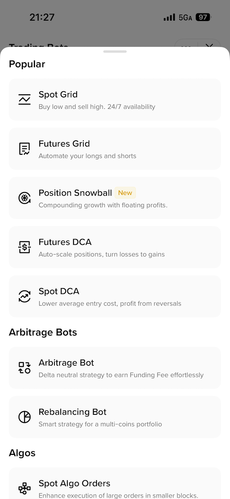
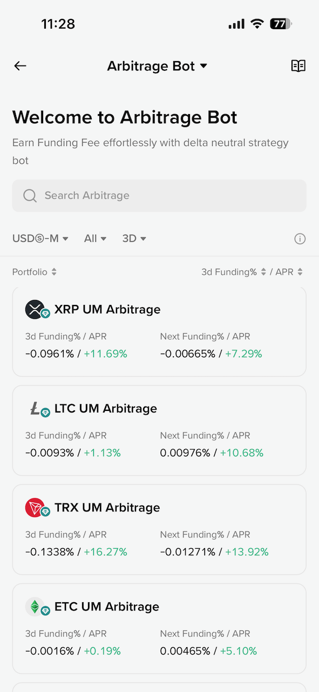
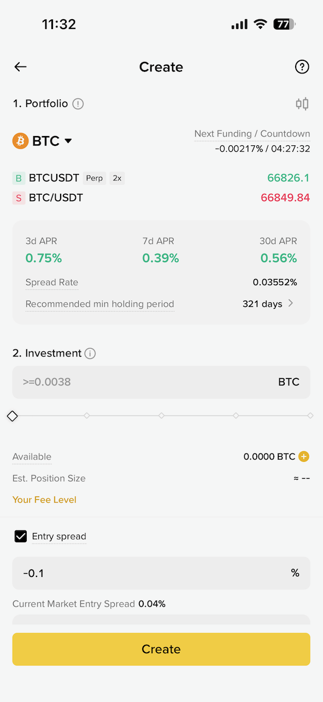
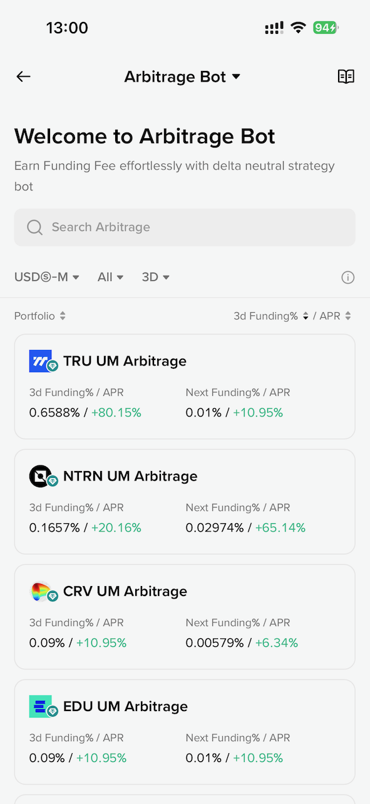
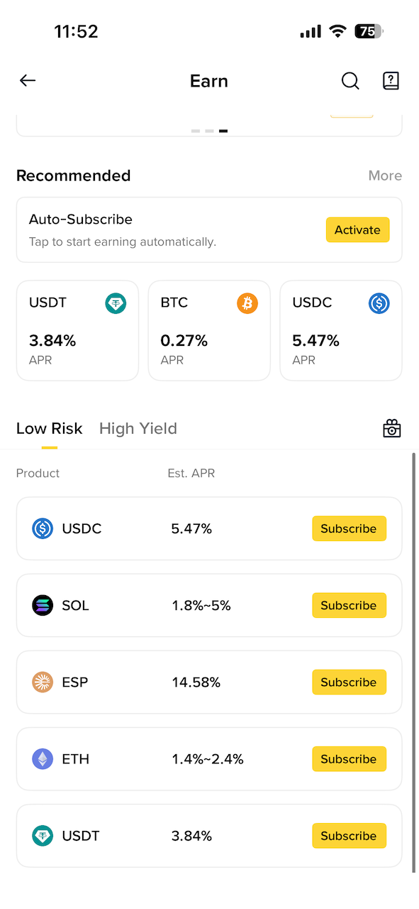
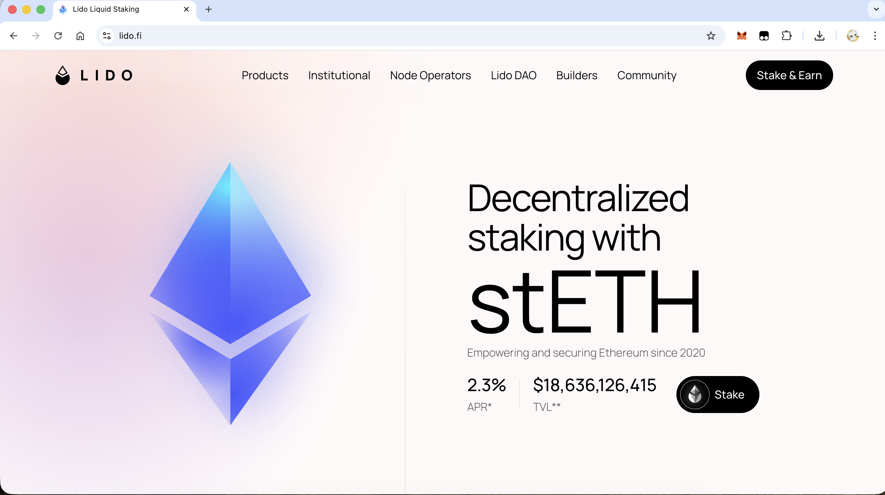
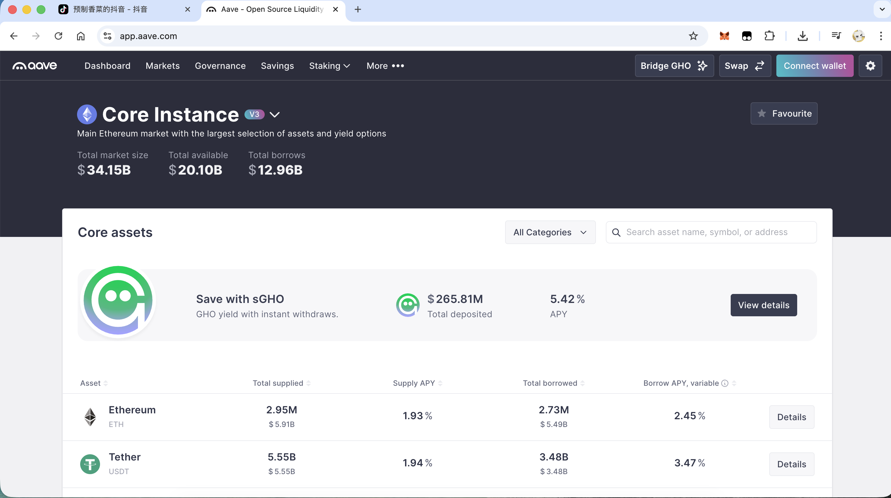
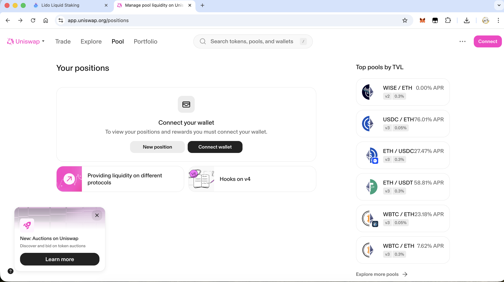
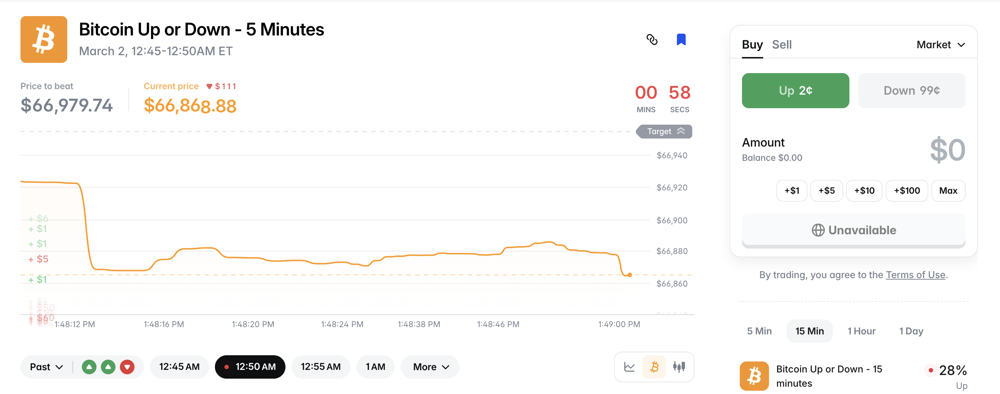

利息，套利，交易策略，金融市场
资金费率套利
资金费率套利是一种没有风险、保本的套利方式。我一开始尝试自己写脚本来运行策略，后来发现 Binance 直接提供了 bot 来进行这种操作：


这里的 Arbitrage Bot 就是资金费率套利的 Bot，点开可以看到有很多币种可以选，包括按照资金费率来排序等。而且 Binance 的 Bot 做的很智能，如果资金费率是正的，就开正向的套利策略（使用 USDT），如果资金费率是负的，就开反向的策略（使用代币）。
资金费率套利的获利空间很小，尤其是 BTC 等主流币种，APR 在 1% 以下，当前低迷的市场环境下，大概持有 300 天以上才能磨平手续费损耗。实际上是很不划算的方式。而如果按照资金费率排序，选最高的一个代币，APR 能相对高一点，也许能达到 40% 甚至更多，当然高收益也就意味着高的波动和风险：


资金费率套利是 Detla 中性的，假如代币突然暴涨，把 2 倍的做多合约给爆仓了，会不会导致损失一半本金呢？不会，因为现货涨了 2 倍后卖掉正好抵消了爆仓的损失，所以本金没有变化，整个过程就是赚了这段时间的资金费率。
所以根据资金费率高的代币排序，然后开套利 Bot，是我唯一尝试过想赚点利息的方式。
保本赚币

Simple Earn 很简单，存到 Binance 里赚利息。问题在于 APR 并不高，USDC 也就 6%，而且有非常高的额度限制，只支持 200 USDC。几乎没什么用。
双币投资
双币投资（Dual Investment）的策略整体看下来，关键在于你心里要有一个预期的价位。比如 BTC 到 60000 就愿意买入，无论它以后会不会继续跌，都以 60000 的价格买入（卖出同理）。
双币投资更像是期货交割的逻辑，对于普通散户来说，同样没什么用。为什么双币投资的利息高呢？因为风险也高，有卖飞或者接刀子的风险。风险高，利息就高了。
如果双币投资设定一个非常离谱的价格呢，比如在 100000 的时候买入 BTC，岂不是可以达不到条件一直赚利息了？但实际上利息是由风险决定的，市场看到风险小，也就没有人愿意付高额利息，所以价格离谱的市场本身就不存在。
开合约、加杠杆
别作死。
Lido

这 2.3% 的 APR 实在是太低了。用某个人的话来说，对于普通人，低于 5% 的 APR 根本不需要考虑，得至少 20 年才能赚钱。
Aave

Aave 的 APR 也很低，甚至最高也低于 2%，几乎等于没有。
Uniswap

乍一看还挺吓人的，USDC/ETH 有 76% 的 APR。问题在于提供流动性是存在无常损失的，你投入 1000 ETH 和 1000 USDC，随着池子中不断进行交易，最终你提出来可能就剩 300 ETH 和 1700 USDC。代币的总量不变，但是 ETH 的价格在剧烈波动，你的投入就完全不划算了。而 Uniswap 上的稳定币交易对 USDT/USDC 这种池子的收益率自然很低，在 1% 左右。
BTC 5 分钟猜涨跌

Polymarket 上线了 BTC 5 分钟猜涨跌的玩法。那么在这种市场有获利的机会吗？结论是没有。这是一种负期望值的游戏，散户、低频等同于纯粹的赌博。甚至可以认为所有的事件预测市场都是赌博。别提什么稳定套利的机会了。
Polymarket 上的 free money
一方面，Polymarket 上有一些整活市场，比如 耶稣会不会在 2027 年回归？。这种市场的 no 价格大约 96.2c，意味着如果持仓一年等待事件结算后，持仓的年化收益大约 4%。非要和传统银行以及现金 APR 比的话这个收益率也还不错。
另一方面，Polymarket 有一个机制，对于某些 符合要求 的市场，只要 holding 就会一直分发年化 4% 的 shares。有一些市场是显然知道结局的，所以可以大胆买入，比如某个市场的 no 价格是 91.1c，当事件结算后会获得接近 9% 的年化收益，再累加上 4% 的持仓收益，实际上是一个还算不错的理财选择。
MEV 攻击、链上科学家、黑暗森林
快省省吧。
金融市场
经过这么多年的发展以及几年前的 DeFi Summer，无论是 Cex 利息还是 DeFi，随着 ETF 的推出、华尔街巨头的介入，只要市场上有低风险的套利机会，就会有几亿的资金以及高频低延迟的机器人入场。普通玩家的机会非常少。
在金融市场里怎么赚钱？
- 拿时间换空间（撸空投）
- 拿本金换利息（大额本金）
- 拿认知、精力换超额收益（现货定投、寻找 Alpha）
除此之外，别无他法。
散户之所以是韭菜，是因为：
- 没有无限的本金
- 缺乏顶级的认知
- 缺乏极度的耐心
反正什么都没有。有的只有无知，和赚钱的欲望。
定投策略
李笑来经历过那么多项目，最后总结出的终极交易策略是定投。《定投改变命运》这本书其实写的非常好，信息密度很高。当我们对于某些高频交易策略动心的时候，不妨回顾一下这本书里提到的要点，而定投正是需要极度耐心的一种策略。
当然定投策略以及李笑来的理论，也有让人觉得扯淡的地方。比如书里到最后，给大家的建议是提高 “场外赚钱的能力”。这基本上是非常正确的废话，谁不知道场外赚钱重要……
定投是一种与人性做对抗的策略，确实很难严格落实，尤其是对于从业者来说，天天会看到行情和市场情绪，不可能做到情绪高的时候还定投，也做不到情绪低的时候管得住手。
想要赚钱，还是得做出点别人做不到的事情才行。
Restaking
刚才提到了定投，那么假如坚持定投 BTC 的话，BTC Restaking 能不能在持有 BTC 的基础上再赚点利息？

Restaking 赛道唯一一个真正做 BTC Restaking 的项目 Babylon，提供的 APR 至高 0.87%，这确实是不值一提。毕竟 2B 的资金量压在协议里，APR 又不能凭空产生，项目收益再高，一分到 2B 的质押量上，APR 就不可能高了。所以 BTC Restaking 几乎不值得去操作。
场外赚钱
我在思考 “场外赚钱” 这个问题。我发现 “定投+持有” 的过程无聊至极。
金融市场里有一个很奇怪的逻辑，明明你就是场外赚钱能力有限，才想要到金融领域通过投资手段寻找高杠杆、高回报率的新机会。而投资界的大佬都会告诉你，场外赚钱的能力才是最重要的，你要有源源不断的现金流才行。
而事实上，金融领域从来只放大资金收益，而不负责基础资金的来源。在金融领域的不可能三角是：
- 本金
- 收益率
- 时间
如果你有足够的本金，即使收益率低也有很好的回报，100 万美元年化 10% 一年下来就是 10 万美元。如果你愿意承担极度高的风险，土狗币百倍币就是高收益最直接的渠道，收益率是对承担风险的回报。
那么如果本金也不够大，风险也不愿意承担呢？剩下能投入的只有时间。